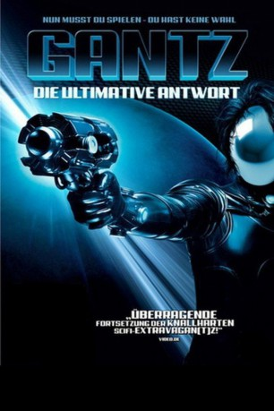

#4716 Gantz - Die ultimative Antwort
 
 IMDB-Wertung: 6.3 / 10
IMDB-Wertung: 6.3 / 10  Metascore: 0
Metascore: 0 
Nachdem sein bester Freund Kato bei der letzten Mission gestorben ist, hat Kurono nur noch eine Chance: er muss in den nächsten Spielen genügend Punkte zusammenbekommen, um Kato wieder ins Leben zurückholen zu können. Doch die mysteriöse Kugel GANTZ hat nun ein neues Ziel ausgewählt, das die Spieler töten sollen: Kuronos Freundin Kojima! Ein erbitterter Kampf auf Leben und Tod entbrennt!
Jahr: 2011
Dauer: 141 Minuten
FSK: 16
Land: Japan Studio: Sunfilm EntertainmentTonspuren:
Untertitel:
Auflösung: 720p (1280x688) Größe: 3102 MB
Genre: Action, Horror, Sci-Fi, Mystery
Regisseur: Shinsuke Sato
Drehbuch: Seth Rogen
Soundtrack:
Darsteller:
- Kazunari Ninomiya als Kei Kurono
 Ken'ichi Matsuyama als Masaru Kato
Ken'ichi Matsuyama als Masaru Kato- Ayumi Itô als Eriko Ayukawa
 Kanata Hongô als Joichiro Nishi
Kanata Hongô als Joichiro Nishi Takayuki Yamada als Masamitsu Shigeta
Takayuki Yamada als Masamitsu Shigeta- Yuriko Yoshitaka als Tae Kojima
- Kensuke Chisaka als Ayumu Kato
- Gô Ayano als Man in Black 1
- Shigeru Oxe als Man in Black 2
- Yasuyuki Hirano als Man in Black 4
- Masafumi Oishi als Man in Black 5
- Kyoji Kamui als Man in Black 6
- Masanobu Sakata als Shinichi Kobayashi
- Naho Toda als Reiko Kitakura
- Ryûya Wakaba als Koki Takahashi
- Tomokazu Koshimura als Kouta Nakamura
- Tomorowo Taguchi als Yoshikazu Suzuki
- Yûko Genkaku als Risa Sakano
- Yurie Midori als Mako Yamamoto
- Kazuyuki Asano als Kenichi Kurono
- A.J. Constantino als Masaru Kato
- Matsuri Hashimoto als Ball Man
- Chieko Ichikawa als Kayo Sugimoto
- Kazuhide Kobayashi als Kiyoshi Hatanaka
- Jeck Lubrin als Masashi Yamada
- Merii als Izumi Shiraishi
- Nako Mizusawa als Woman in Black 3
- Mark Muñoz als Yoshikazu Suzuki
- Raymond Firmo Narag als Kei Kurono
- Natsuna als Megumi Kishimoto
- Motoki Ochiai als Takashi Inamori
- Bon Reyes als Kiyoshi Hatanaka
- Charmaine Sagrado als Kei Kishimoto
- Joarm Santiago als Akitoshi Okazaki
- Kevin Santos als Joichiro Nishi
- Ainosuke Shibata als Tanaka Seijin
- Shun'ya Shiraishi als Hiroto Sakurai
- Yasujirô Tanaka als
- Mitchiko Tiongson als Ayumu Kato
- Tatsuya Wakaba als Mitsuteru Takahashi
- Ayako Yoshitani als
Datei: X:\HD-Eastern-Collections\Gantz\Gantz - Die ultimative Antwort (2011, FSK16, 1280x688).mkv seit 08.11.2016
Festplatte: HD Eastern+Western
 Alle Filme aus Gruppe 'HD-Eastern-Collections\Gantz'
Alle Filme aus Gruppe 'HD-Eastern-Collections\Gantz'